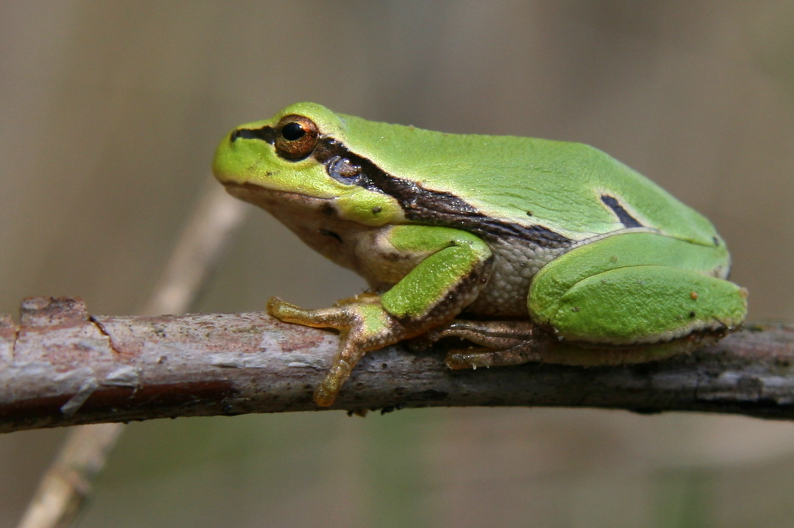
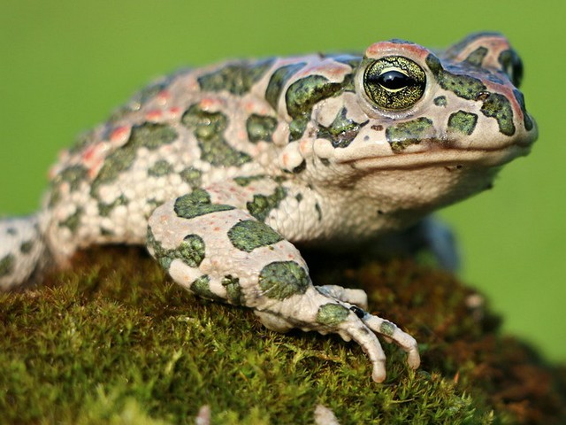
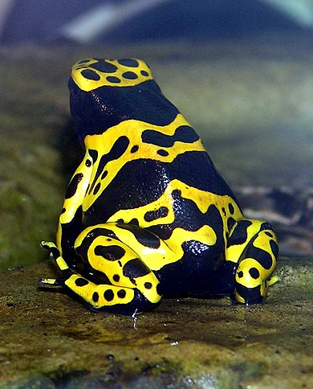
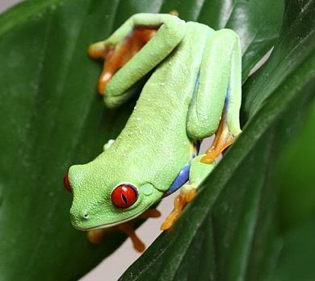

Békakirályság
Kezdőlap
Békák
Pandák
Itt békákat fogsz találni a későbbiekben
Ha 4K vireókat szeretnél látni békákról kattints
IDE
A képre kattintva megturhatsz többet a rajta lévő békáról
Békák veszélyesség szerint
| Piros |
Veszélyes |
| Narancssárga |
Kevésbé veszélyes |
| Zöld |
Ártalmatlan |
Otthon tartható békák
-

-

Nem háziasítható békák
-

-
